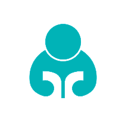
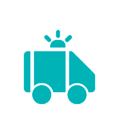
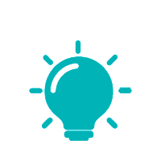
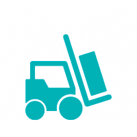

Qué hacemos
UNICEF trabaja para promover el cumplimiento de los derechos de niños, niñas y adolescentes en México
UNICEF trabaja en más de 190 países y territorios para salvar las vidas de los niños. Para defender sus derechos. Para ayudarles a alcanzar su máximo potencial. Y nunca nos rendimos.
Protección de la infancia e inclusión

Seguridad de la infancia a través de la protección y la inclusión
UNICEF trabaja para mejorar las políticas y servicios dirigidos a proteger a todos los niños.
Aspiramos a lograr que los niños crezcan en un mundo seguro e inclusivo.
Supervivencia infantil

Contribuir a la supervivencia y la prosperidad de los niños
La mortalidad en la niñez se ha reducido a nivel mundial. UNICEF desarrolla su labor con el
propósito de hacer llegar soluciones seguras a los niños de todo el mundo.
Educación
La educación es la llave de las oportunidades
UNICEF tiene la convicción de que la educación de calidad constituye un derecho de todos
los niños, tanto en los países en desarrollo como en las zonas de conflicto y crisis.
Política social
Cada niño tiene derecho a una oportunidad justa en la vida
UNICEF trabaja en todo el mundo para reducir la pobreza infantil y proteger a los niños de
sus nefastas consecuencias.
UNICEF en situaciones de emergencia
Responder a las situaciones de emergencia
Cuando estalla una crisis, UNICEF se esfuerza por llegar hasta los niños y las familias de
las regiones más afectadas con recursos vitales.
Género

Propiciar el cambio para las mujeres y niñas
UNICEF lucha por la igualdad de derechos de las mujeres y las niñas, con el propósito de
lograr su participación plena en el desarrollo político, social y económico de todo el mundo.
Innovación en favor de los niños
Construir el mundo que los niños merecen
UNICEF cree que los complejos desafíos a los que se enfrenta la infancia pueden
resolverse con soluciones creativas e innovadoras respaldadas por una labor de
investigación rigurosa.
Suministros y logística
Suministrar soluciones sobre el terreno
UNICEF trabaja con objeto de proporcionar y transportar medicamentos, asistencia y
suministros básicos para los niños más necesitados del mundo.
Investigación, evidencia y análisis

Uso de datos y evidencia para generar resultados
Las iniciativas y programas internacionales de UNICEF se fundamentan en investigaciones
rigurosas y análisis juiciosos. Descubre cómo la información puede allanar el camino del
progreso.
Conoce más acerca de UNICEF
Artículo
ESTADO MUNDIAL DE LA INFANCIA
Accede a información acerca de la situación de los niños en el mundo.
Visitar la página
Artículo
Acerca de UNICEF
Conoce UNICEF, nuestros aliados y las personas que trabajan en favor de los derechos de cada niño.
Visitar la página
Artículo
Dónde trabajamos
Explora el trabajo de UNICEF en más de 190 países y territorios.
Visitar la página
Artículo
Empleo de UNICEF
¿Quieres cambiar el mundo? Trabaja en UNICEF
Visitar el sitio